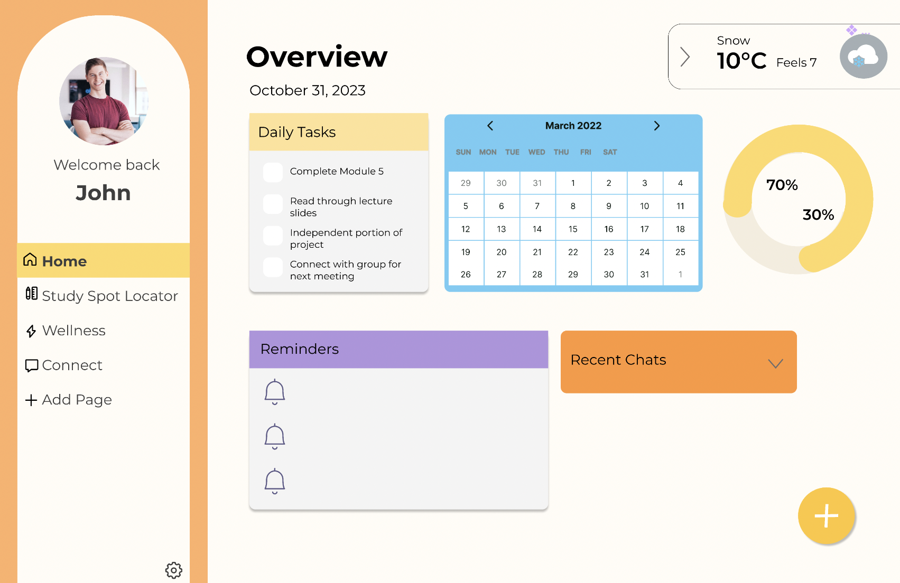
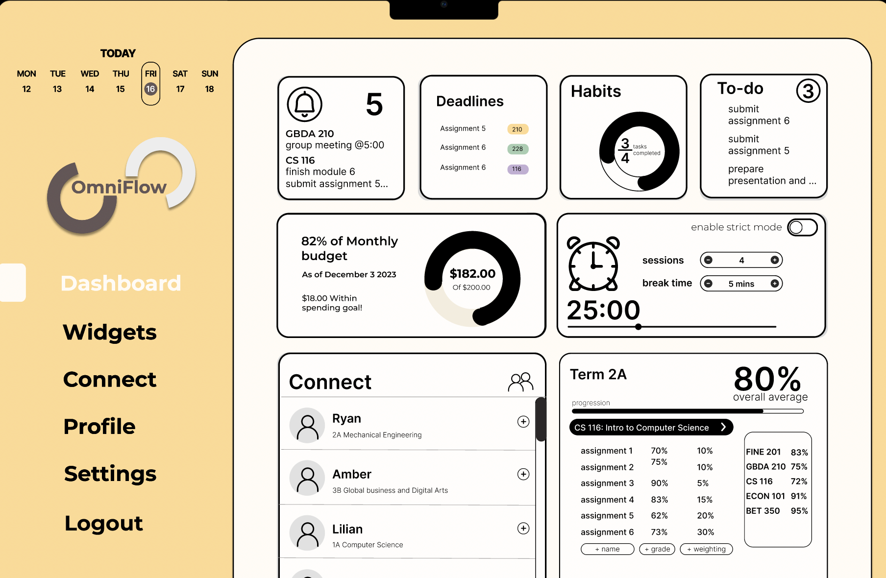

Role
User research
Competitive analysis
Wireframing
Usability testing
Prototyping
Team
5 Product Designers
Timeline
Oct 2023 - Dec 2023
Overview
There is a constant struggle to juggle school work with personal life. Finding balance in hustle culture is a continuous learning curve for everyone, especially for students who are adjusting to workloads or managing schedules.
Despite the numerous applications to help with time management and planning, we saw an opportunity to create an app that encourages a healthier digital lifestyle with students and professionals. With an emphasis on productivity and well being, Omniflow offers a custom-tailored experience for every user and their priorities.
View Final Design
Research takeaways
Fear of missing out
Users can't focus on school or social life without feeling guilty about how they are spending time. Students from other campuses feel more isolated or less connected with peers.
Going back to old ways
Time management applications with various customization features can be overwhelming for users to set up and get adjusted to, often causing them to give up after a short period of time.
Neglect of self care
When interviewing students, most said self care was not even on the list of priorities during school terms. Does self care and work have to be mutually exclusive?
With this in consideration, we had brainstorming sessions to develop features that would facilitate time management and connection with peers.
Features to include
- Wellness feature: Reminders and encouraging prompts to track ones progress of tasks to stay on top of personal wellness goals
- Study spot tracker: Map of available campus spots to help students save time on finding spaces to study
- Custom notifications: Select frequency of notifications based on task load and when they'd like to take breaks.
- Connect page: Allowing peers to keep users motivated without fear of missing out as you can meet people with similar goals
We realized prioritizing an easy set up process was important, so users are not overwhelmed and go back to old habits that may not be effective.
Dashboard - Before
We discovered the need to edit and add widgets barely occurred in the later parts of a users journey and it was simply blocking space on their dashboard. The placement also made it easier to accidentally click on it with our mobile prototype. When users were asked to rank the priorities of the default widgets, responsive were very subjective and it was difficult to meet all needs.

“I mainly found the floating action buttons useful in the beginning to add/edit widgets when I was setting up”
Dashboard - After
Begin with an empty dashboard to customize with selected widgets, enhancing intuitiveness in dashboard setup and widget feature.

Choose relevant widgets from separate tab to meet unique student needs and save time navigating and updating the default widgets.